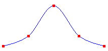
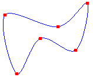
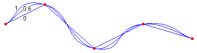

Практическое руководство. Рисование фундаментальных сплайнов
Фундаментальный сплайн представляет кривую, проходящую через заданные точки. Чтобы нарисовать фундаментальный сплайн, создайте Graphics и передать адрес массив точек для DrawCurve метод.
Рисование колоколообразной фундаментального сплайна
Следующий пример выводит колоколообразной фундаментальный сплайн, проходящий через пять определенных точек. На следующем рисунке кривой и пять точек.

Point[] points = {
new Point(0, 100),
new Point(50, 80),
new Point(100, 20),
new Point(150, 80),
new Point(200, 100)};
Pen pen = new Pen(Color.FromArgb(255, 0, 0, 255));
e.Graphics.DrawCurve(pen, points);
Warning
It looks like the sample you are looking for does not exist.
Рисование замкнутую кривую Кардинала
- Используйте DrawClosedCurve метод Graphics классе для рисования замкнутый фундаментальный сплайн. В замкнутой фундаментальной кривой продолжается с помощью последней точки в массиве и подключается с первой точки в массиве. В следующем примере рисуется замкнутый фундаментальный сплайн, проходящий через шесть определенных точек. На следующем рисунке показан замкнутый сплайн и шесть точек:

Point[] points = {
new Point(60, 60),
new Point(150, 80),
new Point(200, 40),
new Point(180, 120),
new Point(120, 100),
new Point(80, 160)};
Pen pen = new Pen(Color.FromArgb(255, 0, 0, 255));
e.Graphics.DrawClosedCurve(pen, points);
Warning
It looks like the sample you are looking for does not exist.
Изменение изгиба фундаментального сплайна
- Изменить способ изгиб фундаментального сплайна, передав аргумент натяжение DrawCurve метод. В следующем примере рисуется три фундаментальные сплайны, которые проходят через тот же набор точек. Ниже представлены три сплайна вместе со значениями натяжение. Обратите внимание, что если натяжение равно 0, точки соединенных прямых линий.

Point[] points = {
new Point(20, 50),
new Point(100, 10),
new Point(200, 100),
new Point(300, 50),
new Point(400, 80)};
Pen pen = new Pen(Color.FromArgb(255, 0, 0, 255));
e.Graphics.DrawCurve(pen, points, 0.0f);
e.Graphics.DrawCurve(pen, points, 0.6f);
e.Graphics.DrawCurve(pen, points, 1.0f);
Warning
It looks like the sample you are looking for does not exist.
Компиляция кода
Предыдущий пример предназначен для работы с Windows Forms, и они требуют PaintEventArgs e, который является параметром Paint обработчик событий.